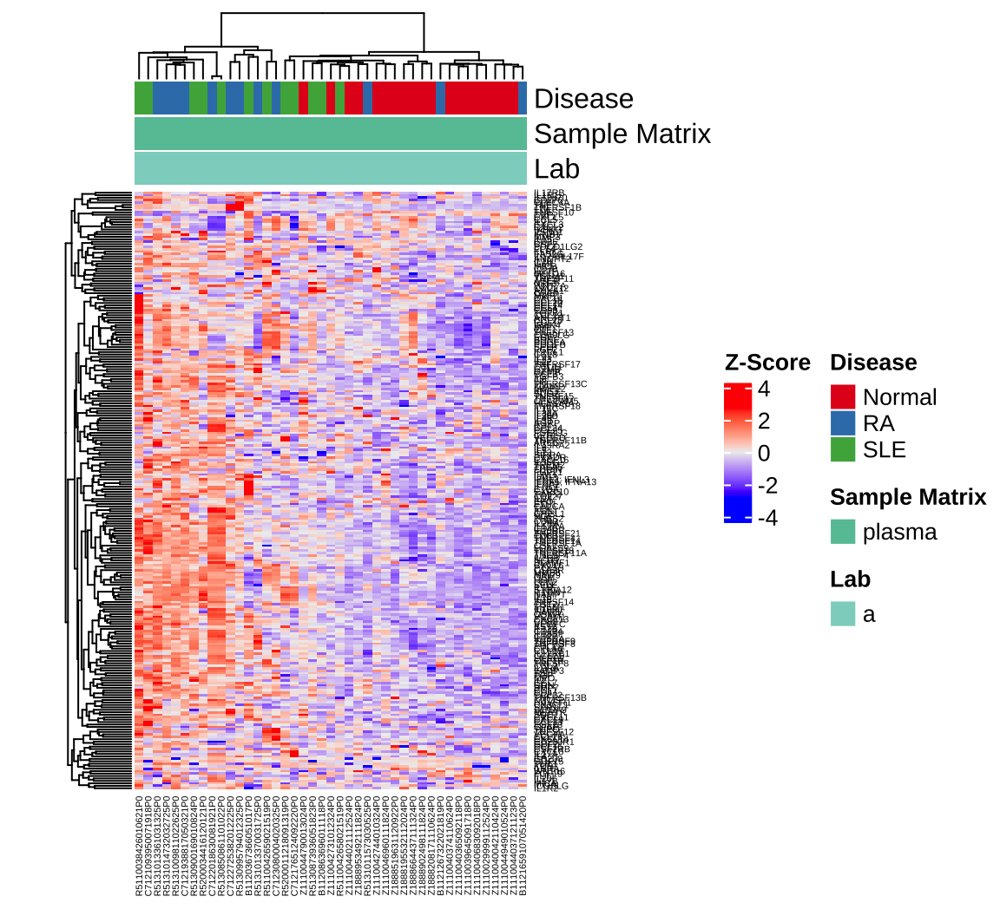
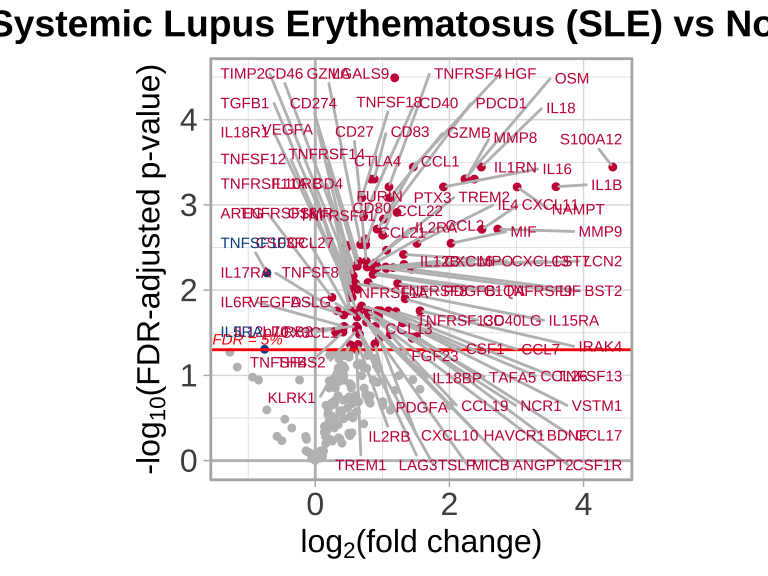
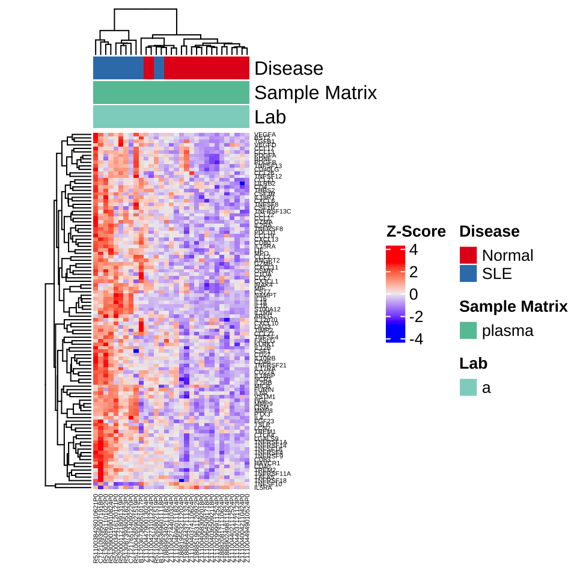
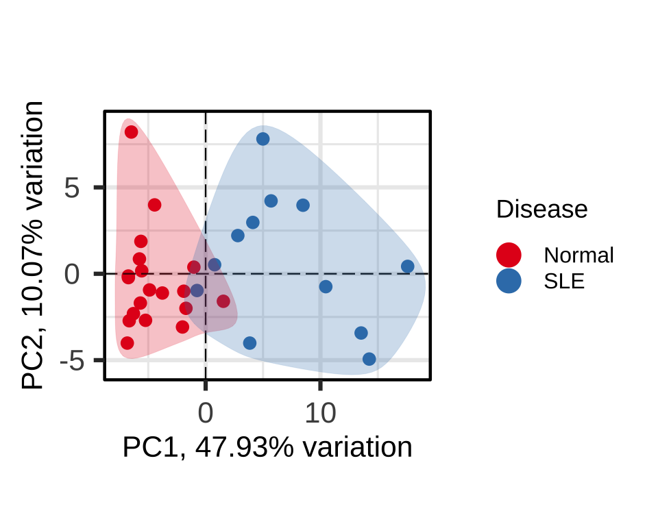
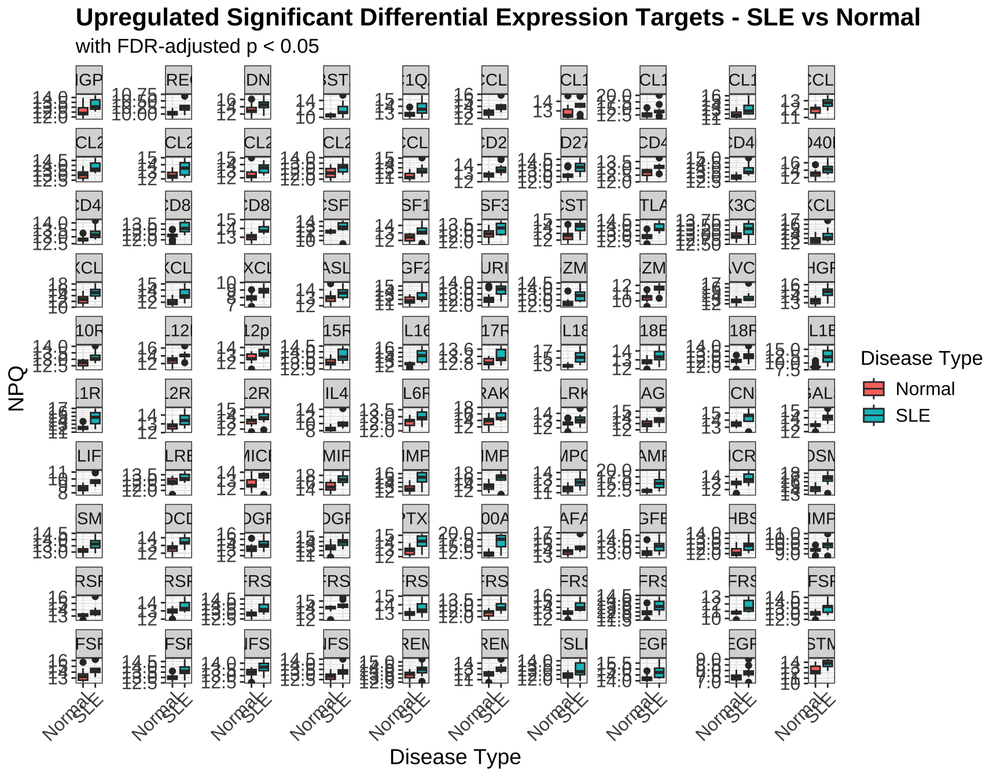
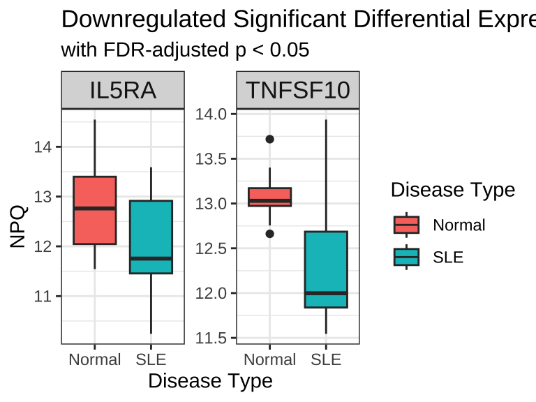
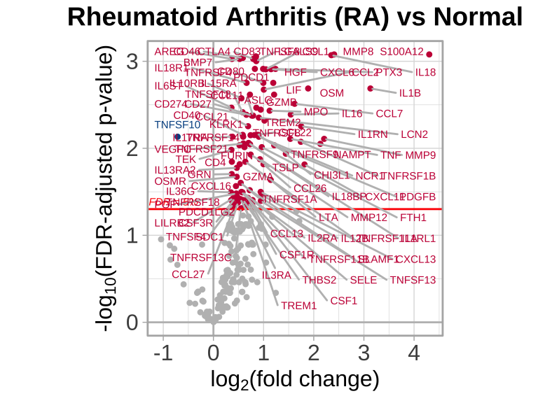
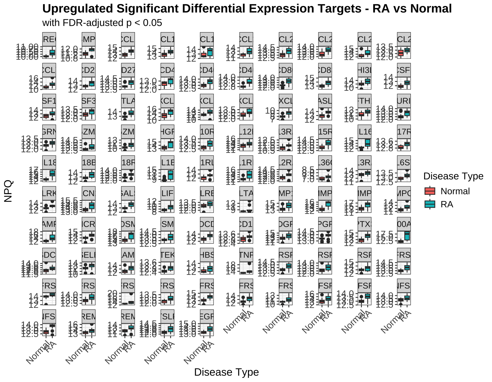
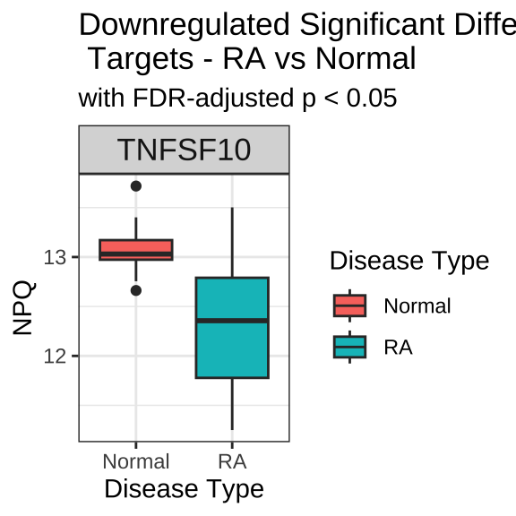

Chapter 7 Complete Workflow:
Identifying Proteomic Signatures in Lupus and Rheumatoid Arthritis
7.1 Overview
Differential expression analysis is a critical component of proteomic studies, enabling researchers to identify proteins that are significantly expressex between experimental conditions. In this chapter, we demonstrate a complete differential expression workflow using the NULISAseq Inflammation Panel to compare inflammatory diseases against healthy controls.
We’ll analyze a dataset containing samples from patients with:
- Systemic Lupus Erythematosus (SLE): An autoimmune disease where the immune system attacks its own tissues, causing widespread inflammation and tissue damage
- Rheumatoid Arthritis (RA): A chronic inflammatory disorder primarily affecting joints, but potentially involving other organ systems
- Normal controls: Healthy individuals without inflammatory disease
This workflow will cover data import, target detectability filtering, visualization of target expression, statistical testing, and interpretation of disease-specific protein signatures.
7.2 Data Preparation
7.2.2 Import Data
We begin by importing the NULISAseq data file:
data_dir <- system.file("extdata", package = "NULISAseqR")
data <- importNULISAseq(files = file.path(data_dir, "Inflammation_250_RQ_demo_2025-05-20-Lab-A.xml"))#> Using single IC to normalize data.7.2.3 Prepare Sample Metadata
Next, we extract and prepare the sample metadata, filtering for experimental samples and setting the reference level for the Disease variable:
metadata <- data$merged$samples %>%
filter(sampleType == "Sample") %>%
mutate(Disease = relevel(Disease, ref = "normal"))
# Display sample distribution
table(metadata$Disease)#>
#> normal lupusSle rheumatoidArthritis
#> 19 12 12The relevel() function is important here as it sets “normal” as the reference group for all subsequent statistical comparisons. This means our differential expression results will show changes in diseased samples relative to healthy controls.
7.3 Apply Detectability Threshold
To ensure robust statistical analysis, we filter proteins based on the detectability across samples. We use a 50% detectability threshold for plasma samples, meaning a target must be detected in at least 50% of samples to be included:
detectability_threshold <- 0.5
targets_passed <- data$merged$detectability %>%
filter(`plasma (n = 43)` > 50) %>%
pull(Target)
# Identify excluded targets
excluded_targets <- setdiff(rownames(data$merged$Data_NPQ), targets_passed)
cat("Number of targets excluded:", length(excluded_targets), "\n")#> Number of targets excluded: 5#> Targets excluded: CNTF, CTSS, IFNW1, IL11, IL327.4 Global Data Visualization
Before performing differential expression analysis, we examine the overall structure of the data using unsupervised visualization methods.
7.4.1 Prepare Metadata for Visualization
First, we clean up the metadata labels for better plot readability:
7.4.2 Hierarchical Clustering Heatmap
The heatmap provides a global view of protein expression patterns across all samples and identifies natural groupings:
h <- generate_heatmap(data = data$merged$Data_NPQ,
sampleInfo = metadata_rename,
sampleName_var = "sampleName",
sample_subset = metadata_rename$sampleName,
target_subset = targets_passed,
annotate_sample_by = c("Disease", "Sample Matrix", "Lab"))
Interpretation: The heatmap shows hierarchical clustering of both samples (columns) and proteins (rows). Look for:
- Clustering of samples by disease type (indicated by the annotation bars)
- Groups of proteins with similar expression patterns
7.4.3 Principal Component Analysis
PCA shows the clustering of samples by groups in reduced dimensional space, highlighting variance in the dataset:
p <- generate_pca(data = data$merged$Data_NPQ,
sampleInfo = metadata_rename,
sampleName_var = "sampleName",
sample_subset = metadata_rename$sampleName,
target_subset = targets_passed,
annotate_sample_by = "Disease")
Interpretation: In the PCA plot:
- Each point represents a sample
- Distance between points reflects similarity in overall protein expression
- Good separation between disease groups suggests distinct proteomic signatures
- PC1 and PC2 percentages indicate how much variation each component explains
7.5 Statistical Testing
We perform linear modeling to identify proteins that are significantly different between disease groups and controls:
lmTest <- lmNULISAseq(data = data$merged$Data_NPQ[targets_passed, metadata$sampleName],
sampleInfo = metadata,
sampleName_var = "sampleName",
modelFormula = "Disease")The lmNULISAseq() function fits a linear model for each protein, testing for differential expression while controlling for multiple comparisons using FDR adjustment.
7.6 Systemic Lupus Erythematosus (SLE) Analysis
7.6.1 Background
Systemic Lupus Erythematosus is characterized by chronic inflammation affecting multiple organ systems. The immune dysregulation in SLE involves abnormal B and T cell activation, autoantibody production, and inflammatory cytokine release. The proteomic signature of SLE typically shows:
- Elevated inflammatory cytokines and chemokines
- Increased acute phase proteins
- Markers of immune activation
- Proteins involved in tissue damage and repair
7.6.2 Volcano Plot
The volcano plot visualizes both the magnitude (fold change) and statistical significance of protein changes:
volcanoPlot(coefs = lmTest$modelStats$DiseaselupusSle_coef,
p_vals = lmTest$modelStats$DiseaselupusSle_pval_FDR,
target_labels = lmTest$modelStats$target,
title = "Systemic Lupus Erythematosus (SLE) vs Normal")
Interpretation:
- X-axis (coefficient): Log2 fold change; positive values indicate upregulation in SLE
- Y-axis (-log10 p-value): Statistical significance; higher values = more significant
- Colored points: Proteins passing the FDR < 0.05 threshold
- Upper left/right corners: Most significantly changed proteins
7.6.3 Visualizations
Now we examine only the samples and proteins relevant to the SLE comparison:
# Select SLE and normal samples
sle_samples <- metadata %>%
filter(Disease %in% c("normal", "lupusSle")) %>%
pull(sampleName)
# Identify significantly differential proteins
sig_targets_sle <- lmTest$modelStats %>%
filter(DiseaselupusSle_pval_FDR < 0.05) %>%
pull(target)
cat("Number of significant targets in SLE:", length(sig_targets_sle), "\n")#> Number of significant targets in SLE: 1027.6.3.1 SLE-Specific Heatmap
h_sle <- generate_heatmap(data = data$merged$Data_NPQ,
sampleInfo = metadata_rename,
sampleName_var = "sampleName",
sample_subset = sle_samples,
target_subset = sig_targets_sle,
annotate_sample_by = c("Disease", "Sample Matrix", "Lab"))
This heatmap focuses exclusively on proteins significantly altered in SLE, making disease-specific patterns more apparent.
7.6.3.2 SLE-Specific PCA
p_sle <- generate_pca(data = data$merged$Data_NPQ,
sampleInfo = metadata_rename,
sampleName_var = "sampleName",
sample_subset = sle_samples,
target_subset = sig_targets_sle,
annotate_sample_by = "Disease")
Using only significantly differential proteins often enhances separation between groups in PCA.
7.6.4 Directional Analysis
We separate upregulated and downregulated proteins to understand the nature of proteomic changes:
# Upregulated proteins (higher in SLE)
sig_targets_sle_up <- lmTest$modelStats %>%
filter(DiseaselupusSle_pval_FDR < 0.05, DiseaselupusSle_coef > 0) %>%
pull(target)
# Downregulated proteins (lower in SLE)
sig_targets_sle_down <- lmTest$modelStats %>%
filter(DiseaselupusSle_pval_FDR < 0.05, DiseaselupusSle_coef < 0) %>%
pull(target)
cat("Upregulated targets:", length(sig_targets_sle_up), "\n")#> Upregulated targets: 100#> Downregulated targets: 2Prepare Long Format Data
We clean up the covariate names in the long data frame for better boxplot readability:
7.6.4.1 Upregulated Proteins in SLE
data_long %>%
filter(Target %in% sig_targets_sle_up,
SampleName %in% sle_samples) %>%
ggplot(aes(x = `Disease Type`, y = NPQ, fill = `Disease Type`)) +
geom_boxplot() +
facet_wrap(~ Target, scales = "free_y") +
labs(title = "Upregulated Significant Differential Expression Targets - SLE vs Normal",
subtitle = "with FDR-adjusted p < 0.05") +
theme(
plot.title = element_text(size = 16, face = "bold"),
plot.subtitle = element_text(size = 13),
axis.title.x = element_text(size = 14),
axis.title.y = element_text(size = 14),
axis.text.x = element_text(size = 12, angle = 45, hjust = 1),
axis.text.y = element_text(size = 12),
strip.text = element_text(size = 11),
legend.title = element_text(size = 13),
legend.text = element_text(size = 12)
)
Interpretation: Elevated proteins in SLE may represent:
- Pro-inflammatory cytokines driving disease pathology
- Acute phase reactants responding to chronic inflammation
- Markers of immune cell activation
- Proteins released from damaged tissues
7.6.4.2 Downregulated Proteins in SLE
data_long %>%
filter(Target %in% sig_targets_sle_down,
SampleName %in% sle_samples) %>%
ggplot(aes(x = `Disease Type`, y = NPQ, fill = `Disease Type`)) +
geom_boxplot() +
facet_wrap(~ Target, scales = "free_y") +
labs(title = "Downregulated Significant Differential Expression Targets - SLE vs Normal",
subtitle = "with FDR-adjusted p < 0.05") +
theme(strip.text = element_text(size = 13))
Interpretation: Decreased proteins in SLE might indicate:
- Consumption of regulatory proteins trying to control inflammation
- Impaired synthesis due to disease-related metabolic changes
- Negative acute phase reactants
- Protective factors depleted in chronic disease
7.7 Rheumatoid Arthritis (RA) Analysis
7.7.1 Background
Rheumatoid Arthritis is a chronic inflammatory disorder that primarily affects synovial joints but can have systemic manifestations. The pathophysiology involves:
- Autoimmune targeting of joint tissues
- Synovial inflammation and proliferation
- Cartilage and bone destruction
- Systemic inflammation
The proteomic profile of RA often shows markers of:
- Joint inflammation and damage
- Systemic inflammatory response
- Matrix degradation
- Immune activation
7.7.2 Volcano Plot
volcanoPlot(coefs = lmTest$modelStats$DiseaserheumatoidArthritis_coef,
p_vals = lmTest$modelStats$DiseaserheumatoidArthritis_pval_FDR,
target_labels = lmTest$modelStats$target,
title = "Rheumatoid Arthritis (RA) vs Normal")
Compare this volcano plot to the SLE plot above. Are there:
- Proteins significantly changed in both conditions (shared inflammatory pathways)?
- Disease-specific signatures unique to RA or SLE?
- Similar magnitude of changes between the two diseases?
7.7.3 Visualizations
# Select RA and normal samples
ra_samples <- metadata %>%
filter(Disease %in% c("normal", "rheumatoidArthritis")) %>%
pull(sampleName)
# Identify significantly differential proteins
sig_targets_ra <- lmTest$modelStats %>%
filter(DiseaserheumatoidArthritis_pval_FDR < 0.05) %>%
pull(target)
cat("Number of significant targets in RA:", length(sig_targets_ra), "\n")#> Number of significant targets in RA: 96
7.7.4 Directional Analysis
# Upregulated proteins (higher in RA)
sig_targets_ra_up <- lmTest$modelStats %>%
filter(DiseaserheumatoidArthritis_pval_FDR < 0.05,
DiseaserheumatoidArthritis_coef > 0) %>%
pull(target)
# Downregulated proteins (lower in RA)
sig_targets_ra_down <- lmTest$modelStats %>%
filter(DiseaserheumatoidArthritis_pval_FDR < 0.05,
DiseaserheumatoidArthritis_coef < 0) %>%
pull(target)
cat("Upregulated targets:", length(sig_targets_ra_up), "\n")#> Upregulated targets: 95#> Downregulated targets: 17.7.4.1 Upregulated Proteins in RA
data_long %>%
filter(Target %in% sig_targets_ra_up,
SampleName %in% ra_samples) %>%
ggplot(aes(x = `Disease Type`, y = NPQ, fill = `Disease Type`)) +
geom_boxplot() +
facet_wrap(~ Target, scales = "free_y") +
labs(title = "Upregulated Significant Differential Expression Targets - RA vs Normal",
subtitle = "with FDR-adjusted p < 0.05") +
theme(
plot.title = element_text(size = 16, face = "bold"),
plot.subtitle = element_text(size = 13),
axis.title.x = element_text(size = 14),
axis.title.y = element_text(size = 14),
axis.text.x = element_text(size = 12, angle = 45, hjust = 1),
axis.text.y = element_text(size = 12),
strip.text = element_text(size = 11),
legend.title = element_text(size = 13),
legend.text = element_text(size = 12)
)
Interpretation: Elevated proteins in RA may include:
- Matrix metalloproteinases and other degradative enzymes
- Inflammatory cytokines (particularly TNF-α pathway members)
- Proteins involved in bone remodeling
- Acute phase proteins
7.7.4.2 Downregulated Proteins in RA
data_long %>%
filter(Target %in% sig_targets_ra_down,
SampleName %in% ra_samples) %>%
ggplot(aes(x = `Disease Type`, y = NPQ, fill = `Disease Type`)) +
geom_boxplot() +
facet_wrap(~ Target, scales = "free_y") +
labs(title = "Downregulated Significant Differential Expression \n Targets - RA vs Normal",
subtitle = "with FDR-adjusted p < 0.05") +
theme(strip.text = element_text(size = 13))
7.8 Comparing Disease Signatures
7.8.1 Overlap Analysis
To understand shared versus disease-specific biology, we can examine the overlap of significant proteins:
# Proteins significant in both diseases
shared_targets <- intersect(sig_targets_sle, sig_targets_ra)
# Disease-specific proteins
sle_specific <- setdiff(sig_targets_sle, sig_targets_ra)
ra_specific <- setdiff(sig_targets_ra, sig_targets_sle)
cat("Shared significant targets:", length(shared_targets), "\n")#> Shared significant targets: 73#> SLE-specific targets: 29#> RA-specific targets: 23# Display shared targets if any
if(length(shared_targets) > 0) {
cat("\nShared targets between SLE and RA:\n")
cat(paste(shared_targets, collapse = ", "), "\n")
}#>
#> Shared targets between SLE and RA:
#> AREG, CCL1, CCL13, CCL2, CCL21, CCL22, CCL26, CCL27, CCL7, CD27, CD274, CD4, CD40, CD46, CD80, CD83, CSF1, CSF1R, CSF3R, CTLA4, CXCL11, CXCL13, CXCL6, FASLG, FURIN, GZMA, GZMB, HGF, IL10RB, IL12B, IL15RA, IL16, IL17RA, IL18, IL18BP, IL18R1, IL1B, IL1RN, IL2RA, KLRK1, LCN2, LGALS9, LIF, LILRB2, MMP8, MMP9, MPO, NAMPT, NCR1, OSM, OSMR, PDCD1, PDGFB, PTX3, S100A12, THBS2, TNFRSF11A, TNFRSF13C, TNFRSF14, TNFRSF18, TNFRSF1A, TNFRSF21, TNFRSF4, TNFRSF8, TNFRSF9, TNFSF10, TNFSF13, TNFSF18, TNFSF4, TNFSF8, TREM1, TREM2, TSLPBiological Interpretation:
- Shared targets represent common inflammatory pathways activated in both autoimmune conditions
- Disease-specific targets may reflect unique pathophysiological mechanisms
- Directional concordance: Check if shared proteins change in the same direction in both diseases
7.8.2 Summary Statistics Table
summary_stats <- data.frame(
Condition = c("SLE vs Normal", "RA vs Normal"),
Total_Significant = c(length(sig_targets_sle), length(sig_targets_ra)),
Upregulated = c(length(sig_targets_sle_up), length(sig_targets_ra_up)),
Downregulated = c(length(sig_targets_sle_down), length(sig_targets_ra_down))
)
knitr::kable(summary_stats,
caption = "Summary of Differential Expression Results")| Condition | Total_Significant | Upregulated | Downregulated |
|---|---|---|---|
| SLE vs Normal | 102 | 100 | 2 |
| RA vs Normal | 96 | 95 | 1 |
7.9 Next Steps
After identifying differentially expressed proteins, typical follow-up analyses include:
- Pathway enrichment analysis: Identify biological pathways over-represented in significant proteins
- Protein network analysis: Understand functional relationships between differential proteins
- Biomarker evaluation: Assess individual proteins or combinations for diagnostic potential
- Correlation with clinical variables: Link protein changes to disease severity or outcomes
- Validation studies: Confirm findings in independent cohorts or using orthogonal methods
7.10 Complete Workflow Example Code
# ============================================================================
# COMPLETE DIFFERENTIAL EXPRESSION WORKFLOW: SLE and RA Analysis
# ============================================================================
# 1. Load libraries and import data
library(NULISAseqR)
library(tidyverse)
data_dir <- system.file("extdata", package = "NULISAseqR")
data <- importNULISAseq(files = file.path(data_dir,"Inflammation_250_RQ_demo_2025-05-20-Lab-A.xml"))
# 2. Prepare metadata
metadata <- data$merged$samples %>%
filter(sampleType == "Sample") %>%
mutate(Disease = relevel(Disease, ref = "normal"))
metadata_rename <- metadata %>%
mutate(Disease = case_when(
Disease == "lupusSle" ~ "SLE",
Disease == "rheumatoidArthritis" ~ "RA",
TRUE ~ "Normal"
),
`Sample Matrix` = tolower(SAMPLE_MATRIX))
# 3. Target detectability filtering
detectability_threshold <- 0.5
targets_passed <- data$merged$detectability %>%
filter(`plasma (n = 43)` > 50) %>%
pull(Target)
cat("Number of targets passing QC:", length(targets_passed), "\n")
# 4. Run differential expression analysis
lmTest <- lmNULISAseq(
data = data$merged$Data_NPQ[targets_passed, metadata$sampleName],
sampleInfo = metadata,
sampleName_var = "sampleName",
modelFormula = "Disease"
)
# ============================================================================
# SLE ANALYSIS
# ============================================================================
# 5a. Filter significant SLE results
sig_targets_sle <- lmTest$modelStats %>%
filter(DiseaselupusSle_pval_FDR < 0.05) %>%
pull(target)
sig_targets_sle_up <- lmTest$modelStats %>%
filter(DiseaselupusSle_pval_FDR < 0.05, DiseaselupusSle_coef > 0) %>%
pull(target)
sig_targets_sle_down <- lmTest$modelStats %>%
filter(DiseaselupusSle_pval_FDR < 0.05, DiseaselupusSle_coef < 0) %>%
pull(target)
# 6a. Get SLE and normal samples
sle_samples <- metadata %>%
filter(Disease %in% c("normal", "lupusSle")) %>%
pull(sampleName)
# 7a. Create SLE volcano plot and save as PDF
volcanoPlot(
coefs = lmTest$modelStats$DiseaselupusSle_coef,
p_vals = lmTest$modelStats$DiseaselupusSle_pval_FDR,
target_labels = lmTest$modelStats$target,
title = "Systemic Lupus Erythematosus (SLE) vs Normal",
plot_name = "volcano_plot_sle_vs_normal.pdf",
data_dir = "figures",
plot_width = 6,
plot_height = 5
)
# 8a. Create SLE heatmap and save as PDF
h_sle <- generate_heatmap(
data = data$merged$Data_NPQ,
sampleInfo = metadata_rename,
sampleName_var = "sampleName",
sample_subset = sle_samples,
target_subset = sig_targets_sle,
annotate_sample_by = c("Disease", "Sample Matrix", "Lab"),
output_dir = "figures",
plot_name = "heatmap_sle_vs_normal.pdf",
plot_width = 8,
plot_height = 6
)
# 9a. Create SLE PCA and save as PDF
p_sle <- generate_pca(
data = data$merged$Data_NPQ,
plot_title = "PCA: SLE vs Normal\nSignificant DE Targets",
sampleInfo = metadata_rename,
sampleName_var = "sampleName",
sample_subset = sle_samples,
target_subset = sig_targets_sle,
annotate_sample_by = "Disease",
output_dir = "figures",
plot_name = "pca_plot_sle_vs_normal.pdf",
plot_width = 5,
plot_height = 4
)
# 10a. Prepare long format data for boxplots
data_long <- data$merged$Data_NPQ_long %>%
mutate(
`Disease Type` = case_when(
Disease == "lupusSle" ~ "SLE",
Disease == "rheumatoidArthritis" ~ "RA",
TRUE ~ "Normal"
))
# 11a. Create upregulated SLE boxplots and save as PDF
boxplot_sle_up <- data_long %>%
filter(Target %in% sig_targets_sle_up,
SampleName %in% sle_samples) %>%
ggplot(aes(x = `Disease Type`, y = NPQ, fill = `Disease Type`)) +
geom_boxplot() +
facet_wrap(~ Target, scales = "free_y") +
labs(title = "Upregulated Significant DE Targets - SLE vs Normal",
subtitle = "with FDR-adjusted p < 0.05",
x = "Disease Type", y = "NPQ") +
theme_minimal() +
theme(strip.text = element_text(size = 11),
axis.text.x = element_text(angle = 45, hjust = 1))
ggsave(
filename = "boxplot_sle_upregulated.pdf",
plot = boxplot_sle_up,
device = "pdf",
path = "figures",
width = 12,
height = 10
)
# 12a. Create downregulated SLE boxplots and save as PDF
boxplot_sle_down <- data_long %>%
filter(Target %in% sig_targets_sle_down,
SampleName %in% sle_samples) %>%
ggplot(aes(x = `Disease Type`, y = NPQ, fill = `Disease Type`)) +
geom_boxplot() +
facet_wrap(~ Target, scales = "free_y") +
labs(title = "Downregulated Significant DE Targets - SLE vs Normal",
subtitle = "with FDR-adjusted p < 0.05",
x = "Disease Type", y = "NPQ") +
theme_minimal() +
theme(strip.text = element_text(size = 11))
ggsave(
filename = "boxplot_sle_downregulated.pdf",
plot = boxplot_sle_down,
device = "pdf",
path = "figures",
width = 4,
height = 3
)
# ============================================================================
# RA ANALYSIS
# ============================================================================
# 5b. Filter significant RA results
sig_targets_ra <- lmTest$modelStats %>%
filter(DiseaserheumatoidArthritis_pval_FDR < 0.05) %>%
pull(target)
sig_targets_ra_up <- lmTest$modelStats %>%
filter(DiseaserheumatoidArthritis_pval_FDR < 0.05,
DiseaserheumatoidArthritis_coef > 0) %>%
pull(target)
sig_targets_ra_down <- lmTest$modelStats %>%
filter(DiseaserheumatoidArthritis_pval_FDR < 0.05,
DiseaserheumatoidArthritis_coef < 0) %>%
pull(target)
# 6b. Get RA and normal samples
ra_samples <- metadata %>%
filter(Disease %in% c("normal", "rheumatoidArthritis")) %>%
pull(sampleName)
# 7b. Create RA volcano plot and save as PDF
volcanoPlot(
coefs = lmTest$modelStats$DiseaserheumatoidArthritis_coef,
p_vals = lmTest$modelStats$DiseaserheumatoidArthritis_pval_FDR,
target_labels = lmTest$modelStats$target,
title = "Rheumatoid Arthritis (RA) vs Normal",
plot_name = "volcano_plot_ra_vs_normal.pdf",
data_dir = "figures",
plot_width = 6,
plot_height = 5
)
# 8b. Create RA heatmap and save as PDF
h_ra <- generate_heatmap(
data = data$merged$Data_NPQ,
sampleInfo = metadata_rename,
sampleName_var = "sampleName",
sample_subset = ra_samples,
target_subset = sig_targets_ra,
annotate_sample_by = c("Disease", "Sample Matrix", "Lab"),
output_dir = "figures",
plot_name = "heatmap_ra_vs_normal.pdf",
plot_width = 8,
plot_height = 6
)
# 9b. Create RA PCA and save as PDF
p_ra <- generate_pca(
data = data$merged$Data_NPQ,
plot_title = "PCA: RA vs Normal\nSignificant DE Targets",
sampleInfo = metadata_rename,
sampleName_var = "sampleName",
sample_subset = ra_samples,
target_subset = sig_targets_ra,
annotate_sample_by = "Disease",
output_dir = "figures",
plot_name = "pca_plot_ra_vs_normal.pdf",
plot_width = 5,
plot_height = 4
)
# 10b. Create upregulated RA boxplots and save as PDF
boxplot_ra_up <- data_long %>%
filter(Target %in% sig_targets_ra_up,
SampleName %in% ra_samples) %>%
ggplot(aes(x = `Disease Type`, y = NPQ, fill = `Disease Type`)) +
geom_boxplot() +
facet_wrap(~ Target, scales = "free_y") +
labs(title = "Upregulated Significant DE Targets - RA vs Normal",
subtitle = "with FDR-adjusted p < 0.05",
x = "Disease Type", y = "NPQ") +
theme_minimal() +
theme(strip.text = element_text(size = 11))
ggsave(
filename = "boxplot_ra_upregulated.pdf",
plot = boxplot_ra_up,
device = "pdf",
path = "figures",
width = 12,
height = 10
)
# 11b. Create downregulated RA boxplots and save as PDF
boxplot_ra_down <- data_long %>%
filter(Target %in% sig_targets_ra_down,
SampleName %in% ra_samples) %>%
ggplot(aes(x = `Disease Type`, y = NPQ, fill = `Disease Type`)) +
geom_boxplot() +
facet_wrap(~ Target, scales = "free_y") +
labs(title = "Downregulated Significant DE Targets - RA vs Normal",
subtitle = "with FDR-adjusted p < 0.05",
x = "Disease Type", y = "NPQ") +
theme_minimal() +
theme(strip.text = element_text(size = 11),
axis.text.x = element_text(angle = 45, hjust = 1))
ggsave(
filename = "boxplot_ra_downregulated.pdf",
plot = boxplot_ra_down,
device = "pdf",
path = "figures",
width = 4,
height = 3
)
# ============================================================================
# COMPARATIVE ANALYSIS AND EXPORT
# ============================================================================
# 13. Analyze overlap between diseases
shared_targets <- intersect(sig_targets_sle, sig_targets_ra)
sle_specific <- setdiff(sig_targets_sle, sig_targets_ra)
ra_specific <- setdiff(sig_targets_ra, sig_targets_sle)
# 14. Export all results to CSV
write_csv(lmTest$modelStats, "results/all_de_results.csv")
# Export SLE results
write_csv(
lmTest$modelStats %>% filter(target %in% sig_targets_sle),
"results/sig_sle_proteins.csv"
)
# Export RA results
write_csv(
lmTest$modelStats %>% filter(target %in% sig_targets_ra),
"results/sig_ra_proteins.csv"
)
# Export overlap results
write_csv(
data.frame(target = shared_targets),
"results/shared_sle_ra_proteins.csv"
)
# 15. Print comprehensive summary
cat("\n========================================\n")
cat("DIFFERENTIAL EXPRESSION SUMMARY\n")
cat("========================================\n\n")
cat("Quality Control:\n")
cat(" Targets passing detectability threshold:", length(targets_passed), "\n\n")
cat("SLE vs Normal:\n")
cat(" Total significant proteins:", length(sig_targets_sle), "\n")
cat(" Upregulated:", length(sig_targets_sle_up), "\n")
cat(" Downregulated:", length(sig_targets_sle_down), "\n\n")
cat("RA vs Normal:\n")
cat(" Total significant proteins:", length(sig_targets_ra), "\n")
cat(" Upregulated:", length(sig_targets_ra_up), "\n")
cat(" Downregulated:", length(sig_targets_ra_down), "\n\n")
cat("Disease Comparison:\n")
cat(" Shared significant targets:", length(shared_targets), "\n")
cat(" SLE-specific targets:", length(sle_specific), "\n")
cat(" RA-specific targets:", length(ra_specific), "\n\n")
cat("Output files created in:\n")
cat(" - figures/ (all plots as PDFs)\n")
cat(" - results/ (all statistical results as CSVs)\n")
cat("========================================\n")